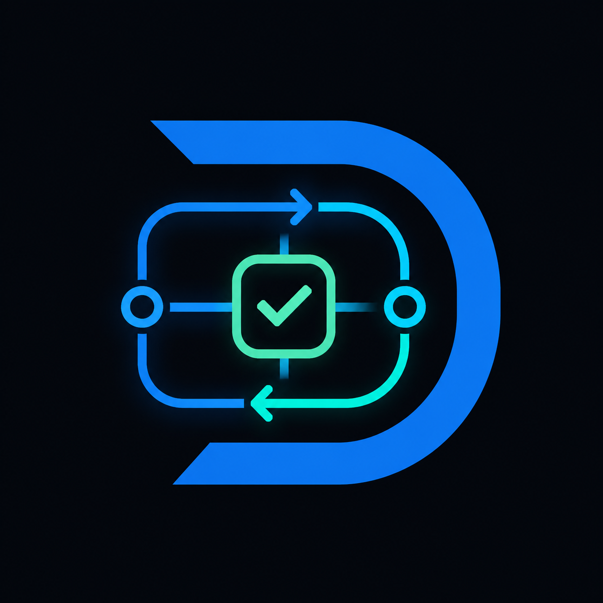

DYRO
功能介绍 · 多仓交付控制面
本地优先的工程自动化与交付控制平台
Agent 负责干活 · Dyro 负责证据与放行
Agent 负责干活 · Dyro 负责证据与放行
01 · 分层架构
Profile团队配置
策略层 · dyro.toml
业务规则、仓库清单、门禁命令与发布策略由团队自行定义，不写死在 Core。
repositories / layout
Agent adapter argv
gates / 回执模板
policy 策略
Coredyro CLI
机制层 · 不绑定 Codex / Claude / 业务域
提供 workspace、launch、dispatch、verify、merge 与 home/console 能力。
开发线 / Hotfix
任务 DAG 调度
门禁执行
合并预检
只读 Console
Runtime.dyro/
运行态 · 可审计、可恢复
任务契约、证据世代、复核裁决与追加式台账分离存放，原子写入防半截状态。
tasks / lines
evidence / receipt
review / signoff
ledger.jsonl
changesets
02 · 交付链路
1
初始化
setup / join
工作区与蓝图
2
开发线
line / hotfix
逐仓基线
3
任务
create / claim
独立 worktree
4
执行+门禁
run + gates
编排器验证
5
独立复核
review / signoff
绑定 HEAD
6
合并交付
merge
changeset
03 · 八大能力
📁
多仓工作区
统一管理多 Git 仓；开发线与 Hotfix 隔离；任务在 task/<id> worktree 执行。
🕸️
任务图调度
depends_on、决策点、冲突组；next / loop / daemon 共享同一调度快照。
✅
门禁与证据
门禁由 Dyro 实际执行，不采信 Agent 口头回执；attempt / receipt 可追溯。
🔍
独立复核
复核绑定回执与各仓精确 HEAD；源码漂移使复核失效；可选外部签收。
📦
外部执行包
external 模式：claim 租约 + evidence ZIP；控制面校验，隔离 runner 执行。
🔐
签名与审计
Ed25519 信任库、用途分离；ledger 台账；可选 Audit Witness 远程回执。
🏠
Home / Console
任意目录进入工作区；只读本地仪表盘；不暴露网络写操作。
🧩
Dispatch 实验
本地多 Agent 派发仅作建议；不能替代 gates、复核或 merge。
04 · 执行模式
local 本机闭环 日常交付
- 本机 adapter 启动 Agent 进入 task worktree
- 本机执行 gates、复核与 merge
- 适合个人与小团队本地闭环
external 隔离 Runner 高保障
- 控制机仅领取、导入与校验证据包
- runner 打包 receipt、日志与精确 HEAD
- 可强制签名执行 / 复核 / 签收
05 · 核心约束
单任务单开发线
功能线与 Hotfix 工作区不可混用。
门禁非自报
编排器实测 gates，Agent 回执不算证据。
复核绑 HEAD
源码漂移立即作废复核结论。
argv 安全配置
可执行项用数组，不跑 TOML shell 串。